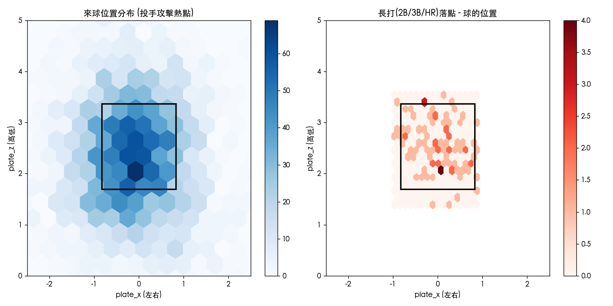

棒球數據分析入門
從基礎打擊率到 Statcast 進階指標，搭配道奇隊與大谷翔平的真實數據逐步說明
每一章難度遞增。第一、二章是電視轉播就會出現的基本數字；第三、四章是近 20 年「Sabermetrics 革命」後業界標準； 第五章 Statcast 是 2015 年後用追蹤系統量出來的物理數據，也是目前最前沿的分析方式。
第一章・基礎打擊指標
打擊率 AVG (Batting Average)
AVG = 安打數 ÷ 打數
最古老的打擊指標。問題：把一壘安打和全壘打看成一樣的價值，也完全不考慮「保送」。
| AVG | 評價 |
|---|---|
| > .300 | 優秀（打擊王等級） |
| .270 - .300 | 平均以上 |
| .240 - .270 | 聯盟平均 |
| < .220 | 偏弱 |
上壘率 OBP (On-Base Percentage)
OBP = (安打 + 保送 + 觸身球) ÷ (打數 + 保送 + 觸身球 + 高飛犧牲打)
衡量「不出局的能力」。《魔球》(Moneyball) 一書讓 OBP 受到重視的關鍵原因：上壘率跟球隊得分的相關性，比打擊率高得多。
| OBP | 評價 |
|---|---|
| > .390 | 優秀（MVP級選眼） |
| .350 - .390 | 平均以上 |
| .310 - .350 | 聯盟平均 |
| < .300 | 偏弱 |
長打率 SLG (Slugging Percentage)
SLG = 總壘打數 ÷ 打數 (一安=1壘、二安=2壘、三安=3壘、全壘打=4壘)
衡量「打多遠」，反映威力型打者的價值。
| SLG | 評價 |
|---|---|
| > .520 | 優秀（重砲打者） |
| .450 - .520 | 平均以上 |
| .390 - .450 | 聯盟平均 |
| < .380 | 偏弱 |
整體攻擊指數 OPS (On-base Plus Slugging)
OPS = OBP + SLG
把上壘能力與長打能力相加，是目前轉播最常見的綜合指標。一般來說：
| OPS | 評價 |
|---|---|
| > 1.000 | 聯盟頂級 (MVP 級) |
| 0.800 - 1.000 | 明星級 |
| 0.700 - 0.800 | 聯盟平均 |
| < 0.700 | 偏弱 |
第二章・基礎投手指標
防禦率 ERA (Earned Run Average)
ERA = (自責分 ÷ 投球局數) × 9
平均每 9 局會被打下幾分自責分。數字越低越好。問題：受隊友守備能力影響很大——同樣的球，遇到好守備可能是出局，遇到差守備就變成安打+失分。
| ERA | 評價 |
|---|---|
| < 3.00 | 王牌級（賽揚等級） |
| 3.00 - 3.75 | 優秀 |
| 3.75 - 4.50 | 聯盟平均 |
| > 4.50 | 偏弱 |
每局被上壘率 WHIP (Walks + Hits per Inning Pitched)
WHIP = (被保送 + 被安打) ÷ 投球局數
平均每局讓幾名打者上壘。WHIP 越低，代表投手讓對手「站上壘包」的機會越少。< 1.20 通常算優秀。
| WHIP | 評價 |
|---|---|
| < 1.10 | 優秀 |
| 1.10 - 1.25 | 平均以上 |
| 1.25 - 1.40 | 聯盟平均 |
| > 1.40 | 偏弱 |
三振率與保送率 K% / BB%
K% = 三振數 ÷ 面對打者數 BB% = 保送數 ÷ 面對打者數
用「面對打者數」當分母，比傳統的 K/9（每九局三振數）更穩定，是進階分析的基本單位。
| K% | 評價 | BB% | 評價 |
|---|---|---|---|
| > 28% | 王牌級三振能力 | < 5% | 控球極佳 |
| 22% - 28% | 優秀 | 5% - 7% | 優秀 |
| 18% - 22% | 聯盟平均 | 7% - 9% | 聯盟平均 |
| < 15% | 偏弱 | > 11% | 控球差 |
第三章・進階打擊指標
加權上壘率 wOBA (Weighted On-Base Average)
wOBA = (0.69×BB + 0.72×HBP + 0.89×1B + 1.27×2B + 1.62×3B + 2.10×HR) ÷ 打席數
OPS 的盲點是「直接把 OBP 跟 SLG 加起來」，但其實一個壘打數的「保送」和一個壘打數的「一安」對球隊得分的貢獻並不相同。 wOBA 透過統計模型，依照每種上壘事件對「期望得分」的實際貢獻給予不同權重，是目前最廣泛使用的單一打擊指標，尺度跟 OBP 接近（聯盟平均約 .320）。
| wOBA | 評價 |
|---|---|
| > .400 | MVP 級 |
| .370 - .400 | 明星級 |
| .320 - .340 | 聯盟平均 |
| < .300 | 偏弱 |
加權跑分創造值+ wRC+ (Weighted Runs Created Plus)
wRC+：以 100 為聯盟平均，並校正球場與年代差異
wRC+ = 120 代表這名打者的進攻貢獻比聯盟平均高 20%。因為經過球場校正（例如校正科羅拉多高海拔球場的打者天堂效應），可以跨年代、跨球隊公平比較。
| wRC+ | 評價 |
|---|---|
| > 140 | MVP 級 |
| 115 - 140 | 明星級 |
| 90 - 110 | 聯盟平均（100為基準） |
| < 80 | 偏弱 |
純長打率 ISO (Isolated Power)
ISO = SLG - AVG
扣除一般安打後的「額外長打能力」。ISO 越高，代表打者越倚賴長打（二壘安打、三壘安打、全壘打）製造壘打數。
| ISO | 評價 |
|---|---|
| > .250 | 重砲級長打力 |
| .180 - .250 | 優秀 |
| .130 - .180 | 聯盟平均 |
| < .100 | 偏弱（缺乏長打） |
場內球安打率 BABIP (Batting Average on Balls In Play)
BABIP = (安打 - 全壘打) ÷ (打數 - 三振 - 全壘打 + 高飛犧牲打)
排除三振和全壘打後的安打率。聯盟平均約在 .290 - .300。如果某打者/投手的 BABIP 大幅偏離平均，常被視為「運氣成分」或「防守佈陣」影響的訊號，是判斷數據能否延續的重要工具。
| BABIP | 解讀 |
|---|---|
| > .330 | 可能運氣偏高，未來有回落風險 |
| .290 - .310 | 聯盟平均區間 |
| < .270 | 可能運氣偏低，未來數據可能回升 |
讀取中...
第四章・進階投手指標
獨立防禦率 FIP (Fielding Independent Pitching)
FIP = (13×HR + 3×(BB+HBP) - 2×K) ÷ 投球局數 + 常數(約3.10)
ERA 的問題是「受隊友守備影響」。FIP 只計算投手「最能控制」的三件事：被全壘打、保送/觸身球、三振， 完全排除場內球的結果（守備好壞）。FIP 跟 ERA 的尺度刻意設計成一樣（聯盟平均約 4.00 左右），方便直接比較： 若 FIP 遠低於 ERA，代表這名投手「被守備拖累」，未來表現可能會回升。
| FIP | 評價 |
|---|---|
| < 3.20 | 王牌級 |
| 3.20 - 3.80 | 優秀 |
| 3.80 - 4.30 | 聯盟平均 |
| > 4.50 | 偏弱 |
進階版 xFIP / SIERA
xFIP：把 FIP 公式中的「實際被全壘打數」換成「依照聯盟平均飛球全壘打率估計的全壘打數」，進一步排除球場/運氣因素。
SIERA (Skill-Interactive ERA)：在 xFIP 基礎上，加入滾地球率、飛球率、跟三振/保送之間「交互作用」的考量（例如：高三振率的投手就算被打出較多場內球，失分風險也較低），是目前對「投手真實能力」估計最精細的公式之一。
| xFIP / SIERA | 評價 |
|---|---|
| < 3.30 | 王牌級 |
| 3.30 - 3.80 | 優秀 |
| 3.80 - 4.30 | 聯盟平均 |
| > 4.50 | 偏弱 |
滾地球率 / 飛球率 GB% FB%
滾地球通常較難形成長打、但容易形成內野安打；飛球容易形成全壘打但也容易形成高飛出局。這個比率常用來判斷投手的「球風」與被全壘打的風險。
| GB% | 球風 |
|---|---|
| > 50% | 滾地球型投手（Ground-ball pitcher） |
| 40% - 50% | 均衡型 |
| < 35% | 飛球型投手（Fly-ball pitcher，需注意被全壘打風險） |
讀取中...
第五章・Statcast 數據 (2015年後的物理追蹤數據)
Statcast 用雷達與光學追蹤系統，記錄每一顆球的「物理數據」，而不只是結果。這是目前最前沿的分析層級。
出球速度 EV (Exit Velocity)
球棒擊中球的瞬間速度（mph）。是打者「擊球品質」最直接的指標，跟受傷或運氣完全無關。
| 平均 EV | 評價 |
|---|---|
| > 92 mph | 頂級擊球品質 |
| 89 - 92 mph | 優秀 |
| 87 - 89 mph | 聯盟平均 |
| < 85 mph | 偏弱 |
擊球角度 LA (Launch Angle)
球離開球棒時與地面的夾角。研究發現，角度在 8°~32° 之間且出球速度夠快時，最容易形成「強勁飛球」甚至全壘打——這也是近年「飛球革命 (Fly Ball Revolution)」的數據基礎。
| LA | 球的性質 |
|---|---|
| < 10° | 滾地球（Ground ball） |
| 10° - 25° | 「甜蜜區」線飛球/平飛球，最容易形成安打 |
| 25° - 50° | 飛球，可能是全壘打或高飛出局 |
| > 50° | 內野高飛球，幾乎必出局 |
重砲區 Barrel%
同時符合「出球速度」與「擊球角度」黃金組合的擊球，被定義為 Barrel（重砲球）。Barrel% = Barrel 數 ÷ 打席數，是預測長打能力最強的單一指標之一。
| Barrel% | 評價 |
|---|---|
| > 12% | 頂級重砲打者 |
| 8% - 12% | 優秀 |
| 5% - 8% | 聯盟平均 |
| < 3% | 偏弱（長打火力不足） |
預期數據 xBA / xSLG / xwOBA
根據每一顆球的出球速度、角度（有時加上方向），用大數據模型估算「平均而言這類球會產生什麼結果」， 得出 xBA（預期打擊率）、xSLG（預期長打率）、xwOBA（預期wOBA）。 如果實際數據遠低於預期值，代表這名打者「被守備佈陣/運氣壓低」，反之則可能是「運氣加成」，未來會回歸。
| xwOBA | 評價 |
|---|---|
| > .400 | MVP 級擊球品質 |
| .360 - .400 | 明星級 |
| .310 - .330 | 聯盟平均 |
| < .300 | 偏弱 |
實戰判讀：實際wOBA - xwOBA > +0.020 通常代表運氣偏好；< -0.020 代表運氣偏差，數據可能向 xwOBA 回歸。
轉速 Spin Rate
球的旋轉速度（rpm）。高轉速速球會讓球「下墜得比預期少」，產生視覺上的「飄浮感」；高轉速曲球則會讓下墜幅度更大。是投手球種設計的核心數據。
| 四縫線速球轉速 | 評價 |
|---|---|
| > 2400 rpm | 高轉速（明顯飄浮感） |
| 2100 - 2400 rpm | 聯盟平均 |
| < 2000 rpm | 低轉速（球路下墜較明顯，常搭配伸卡球使用） |
第六章・實戰案例：大谷翔平 2025 打擊數據
用第五章學到的 Statcast 概念，來看大谷翔平 2025 賽季的真實逐球數據（共 3,010 球）。
各球種：揮空率 vs xwOBA
下圖中，柱狀代表大谷面對每種球路的「揮空率」（揮棒落空的比例），折線代表他打到這種球路後的「xwOBA」（預期表現）。
投手最有效的「球種 + 落點」組合
下表是讓大谷揮空率最高的球種與好球帶位置組合（樣本數 ≥ 10球）。可以看到投手剋制大谷的策略集中在低位的變化球。
好球帶熱點圖
左圖：投手對大谷的攻擊位置分布。右圖：大谷打出二壘安打/三壘安打/全壘打的來球位置。

延伸閱讀
- 《魔球》Moneyball - Michael Lewis，OBP 革命的起點，普及讀物
- The Book: Playing the Percentages in Baseball - Tango/Lichtman/Dolphin，wOBA、UZR 等理論基礎
- FanGraphs Glossary (fangraphs.com) - 每個進階指標的官方定義與計算公式
- Baseball Savant (baseballsavant.mlb.com) - Statcast 官方數據視覺化平台
- 運動視界 - 中文棒球數據分析文章